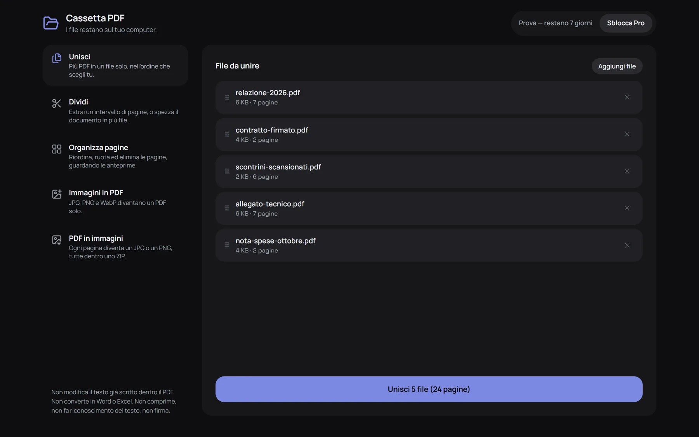
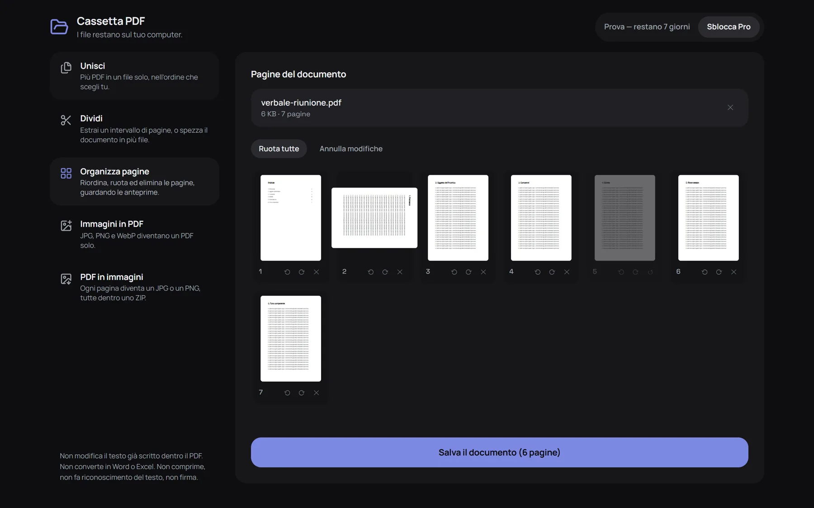

Le pagine dei tuoi PDF, in ordine. E puoi verificarlo tu.
Unisci, dividi, riordina, ruota ed elimina le pagine in un banco di lavoro che si apre in una scheda. Ogni strumento PDF promette che i tuoi file restano tuoi. Un sito non te lo può dimostrare, un'estensione sì: la finestra di installazione elenca tutto quello che le è permesso toccare.
Nessun accountNiente viene caricatoUna riga sola all'installazioneFunziona senza rete

Cinque documenti in fila, nell'ordine che scegli tu. Il bottone dice cosa produce.
Cinque strumenti, un banco solo
Trascini i file, fai quello che ti serve, scarichi il risultato. Niente da configurare, niente da registrare.
Unisci
Più PDF in un file solo, nell'ordine che scegli tu. Le righe si trascinano per cambiarlo.
Dividi
Estrai un intervallo di pagine, o spezza un documento in più file nei punti che scegli.
Organizza pagine
Riordina, ruota ed elimina guardando le anteprime. Si torna indietro fino al salvataggio.
Immagini in PDF
JPG, PNG e WebP diventano un PDF solo, una foto per pagina.
PDF in immagini
Ogni pagina diventa un JPG o un PNG, tutte dentro un solo ZIP.
Le pagine davanti agli occhi, non un elenco di numeri
Ruoti una pagina, ne segni un'altra da eliminare, le trascini in un altro ordine. Il bottone dice cosa conterrà il documento salvato prima che tu lo prema.

Quello che non fa — scritto qui, non nascosto nelle domande frequenti
I grandi «editor PDF» stanno a 1,5 stelle perché promettono cose che non sanno fare. Queste sono le nostre, nero su bianco.
noNon modifica il testo già scritto dentro il PDF.
noNon converte in Word o in Excel.
noNon comprime i PDF.
noNon fa riconoscimento del testo (OCR).
noNon firma: il browser annota e firma i PDF da solo.
Non credere a noi: leggi i permessi
Non è una promessa scritta su una pagina: è come è fatta l'estensione, e lo controlli tu in dieci secondi.
Autorizzazioni: nessuna
Prima di installare, il browser elenca cosa un'estensione può toccare. Sulla nostra, alla voce «Autorizzazioni», scrive: «Questa estensione non richiede autorizzazioni speciali». Alla voce «Accesso al sito» c'è un indirizzo solo: extensionpay.com, la pagina dove si paga — niente sui siti che visiti. Molte estensioni PDF chiedono di leggere ogni pagina che apri: controlla anche le loro, e ricontrolla la nostra quando vuoi in chrome://extensions → Dettagli.
Nessun server, nessun account
Il PDF lo apre, lo cambia e lo salva il tuo browser. Contratti, buste paga e referti restano dove sono.
Niente pubblicità, niente statistiche
Non si conta niente e non si manda niente. Stacca il wi-fi: funziona lo stesso.
Sette giorni gratis. Poi si paga una volta sola.
La prova è la versione completa: niente email, niente carta di credito, niente da disdire. Quando finisce l'estensione continua a lavorare sui lavori piccoli — e quello che esce è sempre un documento sano, senza marchi.
Gratis, dopo la prova
0 € per sempre
- Fino a 20 pagine per volta
- Unisci 2 file alla volta
- 5 immagini in un PDF
- Le prime 3 pagine in immagini
- Nessun marchio, niente rovinato di proposito
Pro
14 € una volta sola, per sempre
- Documenti di qualsiasi lunghezza
- Unisci quanti file vuoi
- Tutte le immagini in un PDF solo
- Tutte le pagine in immagini, dentro uno ZIP
- Nessun abbonamento, nessun account
Rimborso entro 14 giorni se non fa per te. Il pagamento lo gestisce Stripe: la tua carta non la vediamo mai.
Provala su un documento tuo.
Si installa in pochi secondi e la prova parte subito, senza compilare niente.